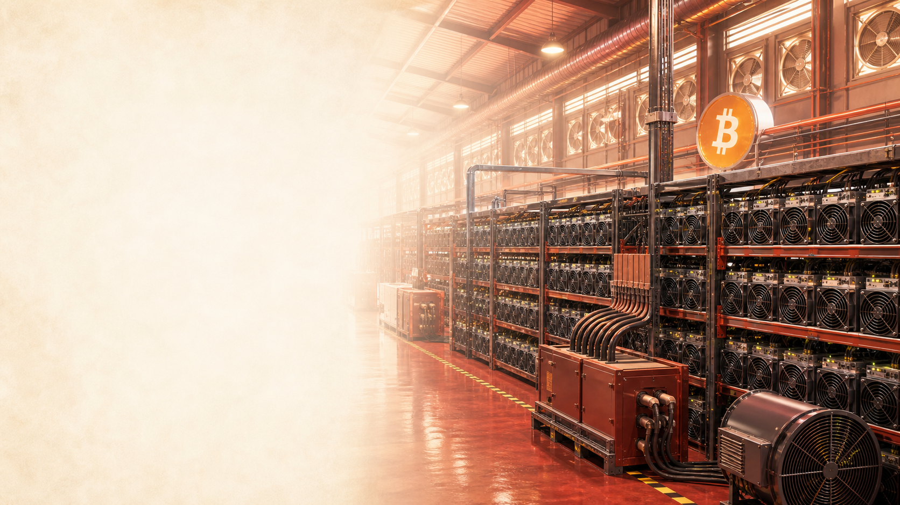

    <section class="slide slide-with-background" data-slide-type="background-full" data-theme="chapter-5" data-slide-id="c5-u28-s2" data-image-usage="full-slide-background">
      <div class="slide-inner">
        
    <div class="slide-background-media">
      
      
      <div class="placeholder-metadata" hidden aria-hidden="true">
        <div class="placeholder-label">background image placeholder</div>
        <div class="placeholder-strong">ทำให้ผู้เรียนเห็นว่าการขุดสำคัญ แต่ไม่ใช่ทางเข้าที่ง่ายของคนส่วนใหญ่</div>
        <div class="placeholder-copy">ภาพแบบ one-sided ที่สื่อ scale และต้นทุนของการขุดอย่างมีวินัย ไม่เวอร์เกินจริง ฝั่งข้อความต้องโล่งและสะอาด ไม่มี object ล้ำเข้ามา</div>
      </div>
    </div>
        
        
      <div class="canvas background-full-layout">
        <div class="background-full-copy">
          
    
    <h2 class="headline">Mine (ขุด)</h2>
    <p class="subheadline">ใช้พลังงานไฟฟ้าช่วยปกป้องระบบ<br />เพื่อรับค่าตอบแทนเป็นบิตคอยน์<br />แต่ไม่ใช่งานที่เหมาะสำหรับทุกคน</p>
          
          <div class="callout-group" data-callout-sizing="match-longest"><div class="callout">เป็นส่วนตัวที่สุด ได้เหรียญใหม่ ปลอดประวัติ</div>
<div class="callout">เหมาะกับคนที่มีแหล่งพลังงานราคาถูก</div>
<div class="callout">ใช้ความรู้และการลงทุนสูง ไม่เหมาะสำหรับมือใหม่</div></div>
        </div>
      </div>
        <div class="slide-footer">
          <div class="footer-left">Bitcoin Learning Modules</div>
          <div class="footer-center">Chapter 5 : Becoming a Bitcoin Owner | Unit 28: การได้บิตคอยน์จากการขุด</div>
          <div class="footer-right">1/1</div>
        </div>
      </div>
    </section>
